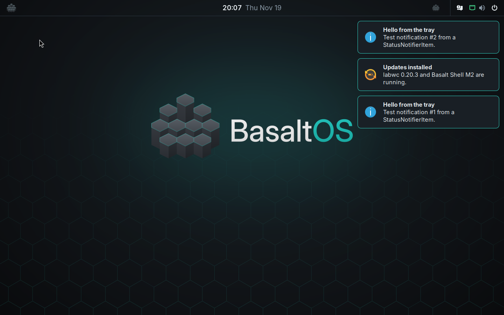

Core
Manual configuration
The bare hardened Debian base. No web admin UI and no add-ons.
basaltos-1.0-core-amd64.iso
A hardened Linux OS based on Debian stable, with the Strata desktop and a full server edition.
Editions
Both images are hardened Debian stable for amd64. Each ISO is published with a SHA256SUMS file.
Core
The bare hardened Debian base. No web admin UI and no add-ons.
basaltos-1.0-core-amd64.iso
Server
Strata Desktop and the web admin UI, on the same hardened base.
basaltos-1.0-server-amd64.iso
Strata Desktop
labwc underneath. Branded boot and login, a logo start button, wallpapers, and a tray.

The splash and the greeter use the same mark, wordmark, and teal field.

Roadmap
An app store, a first-login welcome, update choices, an NVIDIA helper, and more. The base stays on Debian stable.
BasaltOS is Debian stable. It is not a rolling release. Read the roadmap